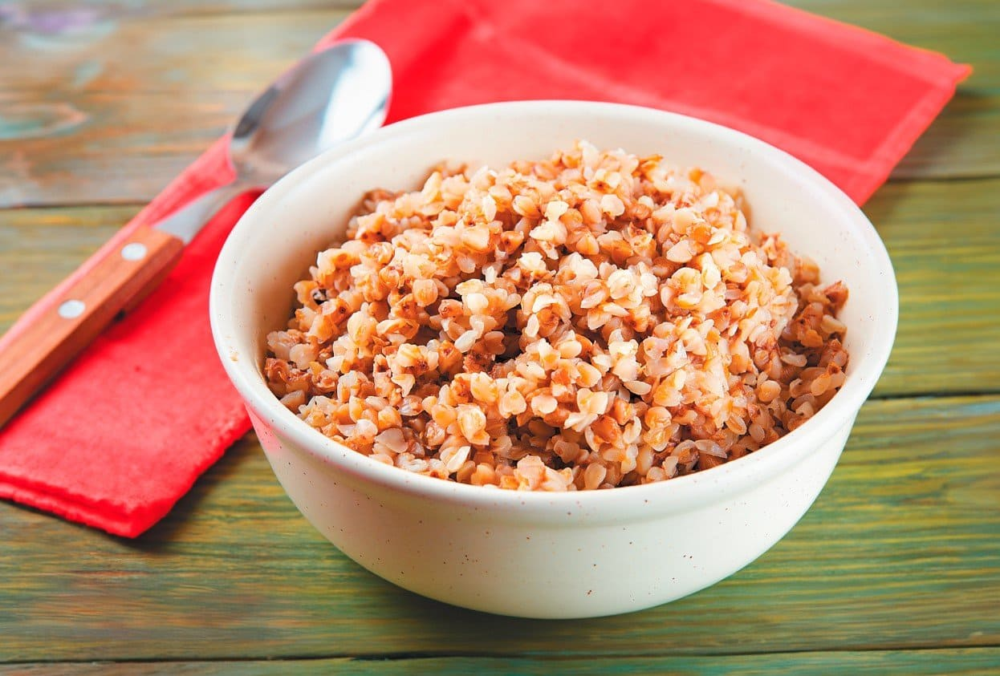
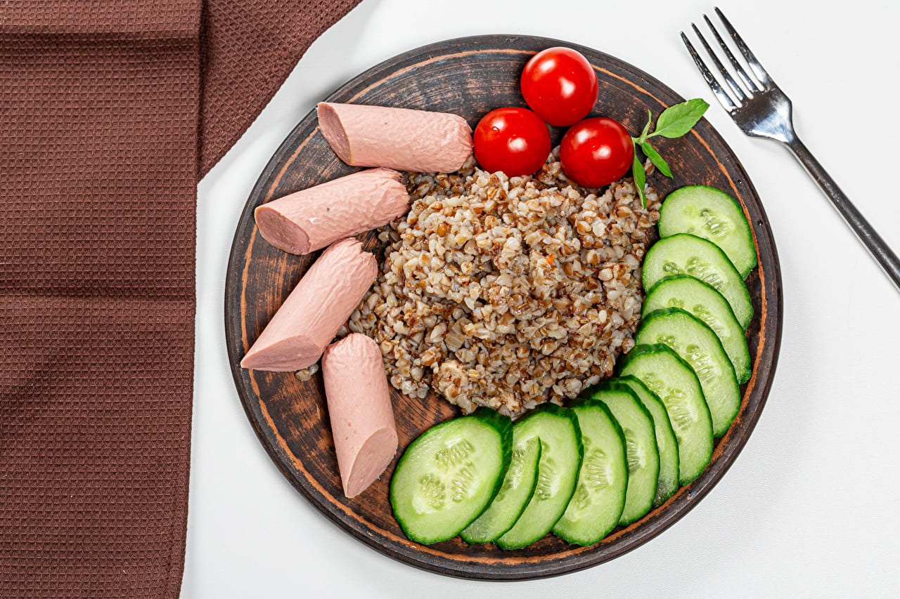

👇Ингредиенты👇
1 стакан гречневой крупы
2 стакана воды или бульона
1/2 луковицы, нарезанной кубиками
1 морковь, натертая на терке
1 зубчик чеснока, измельченный
2 столовые ложки растительного масла
1/4 чайной ложки соли
1/4 чайной ложки черного молотого перца
Инструкции👍
1. Промойте гречневую крупу в холодной воде и отложите.
2. В большой сковороде разогрейте растительное масло на среднем огне.
3. Добавьте лук и морковь и обжаривайте, пока они не станут мягкими, около 5 минут.
4. Добавьте чеснок и обжаривайте еще минуту.
5. Добавьте гречневую крупу и перемешайте, чтобы она покрылась маслом.
6. Влейте воду или бульон, добавьте соль и перец.
7. Доведите до кипения, затем уменьшите огонь и накройте крышкой.
8. Готовьте 12-15 минут, или пока вся жидкость не впитается.
9. Если желаете, добавьте горошек или бекон за 5 минут до окончания приготовления.
10. Снимите с огня и дайте постоять под крышкой еще 5 минут перед подачей.


Советы📌
Для более насыщенного вкуса используйте куриный или овощной бульон вместо воды.
Добавьте другие овощи, такие как нарезанный кубиками сладкий перец или грибы.
Посыпьте готовую гречку тертым сыром или свежей зеленью.